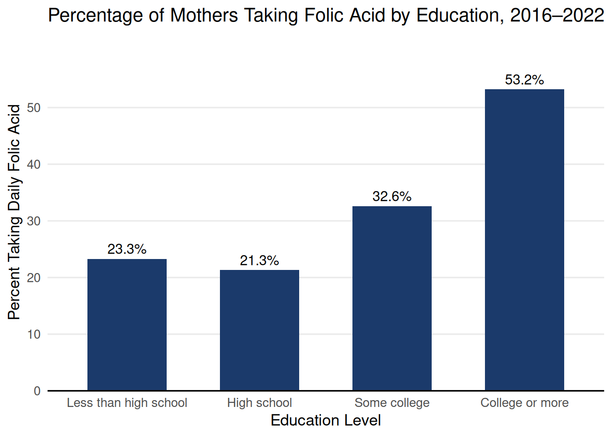
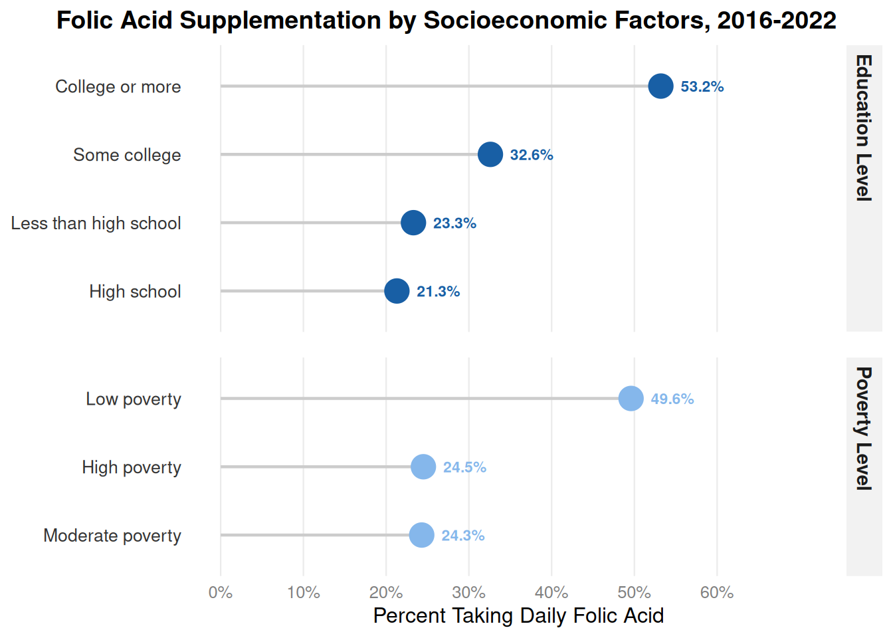
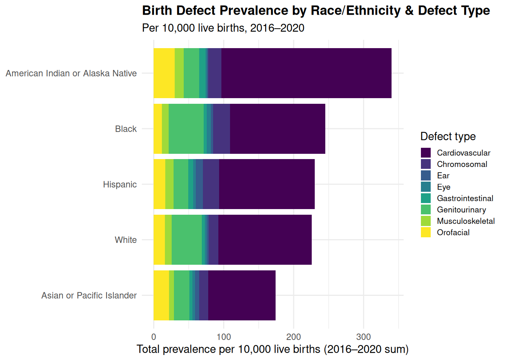
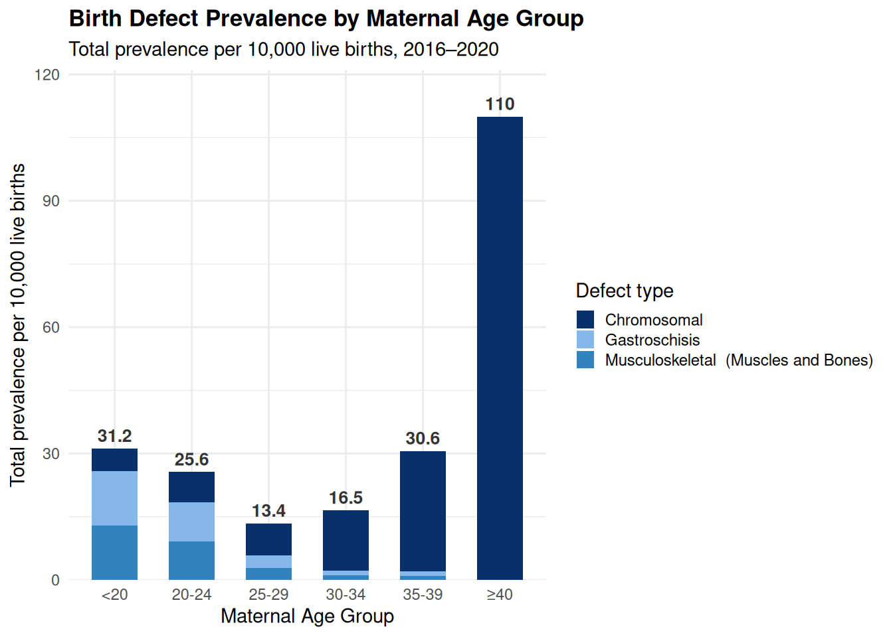

Member 3 Yeshe J
Load in data
Folic Acid Supplementation by Education Level
Code
# Averaged across 2016-2022
folic_ed <- folic_master %>%
filter(
Subtopic == "Folic Acid Use",
Variable == "Education Level"
)
folic_ed_avg <- folic_ed %>%
group_by(Category) %>%
summarize(pct = mean(Value, na.rm = TRUE))
folic_ed_avg <- folic_ed_avg %>%
mutate(Category = factor(Category, levels = c(
"Less than high school",
"High school",
"Some college",
"College or more"
)))
ggplot(folic_ed_avg, aes(x = Category, y = pct)) +
geom_col(fill = "#1B3A6B", width = 0.6) +
geom_text(aes(label = paste0(round(pct, 1), "%")),
vjust = -0.5, size = 4, color = "black") +
scale_y_continuous(
limits = c(0, 60),
breaks = seq(0, 50, 10),
expand = expansion(mult = c(0, 0.05))
) +
labs(
title = "Percentage of Mothers Taking Folic Acid by Education, 2016–2022",
x = "Education Level",
y = "Percent Taking Daily Folic Acid",
) +
theme_minimal(base_size = 13) +
theme(panel.grid.major.x = element_blank(),
panel.grid.minor = element_blank(),
axis.line.x = element_line(color = "black")
)
Folic acid supplementation rates increase with education level, but not linearly. Mothers with less than a high school education (~23%) and high school only (~21%) show lower daily supplementation rates, while it jumps to ~33% for some college education and to ~53% for college or more. The 32.6 percentage gap between the lowest and highest education groups suggests that supplementation behavior is very likely tied to the level of education earned, suggesting the intertwinedness health literacy and access to prenatal care.
Birth Defect Type Prevalence
Code
prevalence_combined <- prevalence_combined %>%
mutate(severity_num = as.numeric(fct_rev(severity)))
ggplot(prevalence_combined,
aes(x = reorder(Label, Value),
y = Value, fill = severity_num)) +
geom_col(width = 0.7) +
geom_col(data = filter(prevalence_combined, defect_group == "Neural Tube Defect"),
width = 0.7, color = "red", linewidth = 1.1
) +
coord_flip() +
scale_fill_viridis_c(option = "viridis",
direction = -1,
labels = c("Fatal/Severe", "Serious/Lifelong", "Significant/Variable", "Treatable/Correctable")
) +
guides(fill = guide_colorbar(reverse = TRUE)) +
labs(
title = "Birth Defect Conditions by Severity",
subtitle = "Types of NTDs highlighted/outlined in red",
x = NULL,
y = "Prevalence per 10,000 live births",
fill = "Severity Level"
) +
theme_minimal() +
theme(
plot.title = element_text(face = "bold", size = 13),
plot.subtitle = element_text(color = "grey40", size = 10),
axis.text.y = element_text(size = 9, color = label_colors),
legend.title = element_text(size = 11, margin = margin(b = 15)),
legend.text = element_text(size = 9),
legend.key.size = unit(0.5, "cm")
)Neural Tube Defects are among the most serious and fatal types of birth defects. Although conditions like down Syndrome and cleft lip/palate are much more common, they are often treatable and manageable. Meanwhile spina bifida and anencephalus–which are both types of NTDs–are much less prevalent but fall at the most severe end of the spectrum.
Spina bifida is a lifelong condition with high vulnerability for paralysis, learning disabilities, and other complications. Anencephalus is almost always fatal as babies are born with large missing parts of their brain and skull. Both of these conditions are highly serious despite its lower prevalence.
Education & Poverty Level (Socioeconomic factors)
Code
library(tidytext)
folic_master %>%
filter(
Subtopic == "Folic Acid Use",
Variable %in% c("Education Level", "Poverty Level")
) %>%
group_by(Variable, Category) %>%
summarize(pct = mean(Value, na.rm = TRUE), .groups = "drop") %>%
mutate(Category = reorder_within(Category, pct, Variable)) %>%
ggplot(aes(x = pct, y = Category, color = Variable)) +
geom_segment(aes(x = 0, xend = pct, yend = Category), linewidth = 0.8, color = "grey80") +
geom_point(size = 6) +
geom_text(aes(label = paste0(round(pct, 1), "%")), nudge_x = 5, size = 3,
fontface = "bold", show.legend = FALSE) +
scale_y_reordered() +
scale_color_manual(values = c("Education Level" = "#185FA5", "Poverty Level" = "#85B7EB")) +
scale_x_continuous(limits = c(0, 72), breaks = seq(0, 60, 10),
labels = scales::label_percent(scale = 1)) +
facet_grid(Variable ~ ., scales = "free_y", space = "free_y") +
labs(
title = "Folic Acid Supplementation by Socioeconomic Factors, 2016-2022",
x = "Percent Taking Daily Folic Acid", y = NULL, color = NULL
) +
theme_minimal(base_size = 12) +
theme(
legend.position = "none",
strip.text = element_text(face = "bold", size = 11, hjust = 0),
strip.background = element_rect(fill = "grey95", color = NA),
plot.title.position = "plot",
plot.title = element_text(face = "bold", size = 14, hjust = 0.5),
axis.text.y = element_text(size = 10, color = "grey20"),
axis.text.x = element_text(color = "grey50"),
panel.grid.major.y = element_blank(),
panel.grid.minor = element_blank(),
panel.grid.major.x = element_line(color = "grey92", linewidth = 0.4),
panel.spacing = unit(1, "lines")
)
The same pattern emerges when looking at poverty level. Low-poverty mothers supplement at ~50%, which is similar to the rate for college-educated mothers, while mothers who are in the moderate or high poverty groups hover ~24% for their supplementation rate. The fact that both education and poverty point towards the same direction suggests the existence of a compounding disadvantage. Mothers who are both low-income and less educated face the greatest barriers in adequate folic acid intake, which may explain the racial and socioeconomic disparities causing higher birth defect prevalence.
What does this mean for NTDs? Since neural tube defects form in the first month of pregnancy, often before a mother knows she is pregnant, daily supplementation before conception is very critical! The populations least likely to supplement consistently also end up being the populations who are most exposed to NTD risk, not necessarily due to biology, but due to structural barriers.
Maternal Ethnicity/Race & Birth Defect Type (Overall)
The next question is whether these supplementation gaps show up in actual birth defect outcomes. The following charts look at defect prevalence by race/ethnicity and maternal age as two dimensions that intersect closely with the education and poverty level patterns from earlier.
Code
# Chart 1: SUM OF ALL
maternal_stacked <- maternal_master %>%
filter(
Variable == "Maternal race/ethnicity",
!Category %in% c("All races/ethnicities combined", "Other/Unknown")
) %>%
group_by(Category, Note) %>%
summarize(avg_prevalence = sum(Value, na.rm = TRUE), .groups = "drop") %>%
mutate(Note = str_remove(Note, " \\(.*\\)"), Category = str_remove(Category, ",? Non-Hispanic| Non-Hispanic|/Non-Hispanic")) %>%
group_by(Category) %>%
mutate(total = sum(avg_prevalence)) %>% # adds total for ordering
ungroup()
ggplot(maternal_stacked, aes(x = reorder(Category, total), # orders by total now
y = avg_prevalence,
fill = Note)) +
geom_col() +
coord_flip() +
scale_fill_viridis_d(option = "viridis") +
labs(
title = "Birth Defect Prevalence by Race/Ethnicity & Defect Type",
subtitle = "Per 10,000 live births, 2016–2020",
x = NULL,
y = "Total prevalence per 10,000 live births (2016–2020 sum)",
fill = "Defect type"
) +
theme_minimal() +
theme(legend.position = "right",
legend.text = element_text(size = 8),
plot.title = element_text(face = "bold", size = 13),
legend.key.size = unit(0.4, "cm")
)
American Indian/Alaska Native mothers carry the highest birth defect burden of any racial group in Minnesota, followed by Black/Non-Hispanic mothers. Cardiovascular defects are the majority of the across all groups, but these are also populations that face disproportionate socioeconomic barriers, which remain consistent with the supplementation gaps we saw before. Meanwhile, Asian or Pacific Islander mothers show the lowest overall prevalence. Note that NTDs are not included in this dataset and are analyzed separately.
Birth Defect Prevalence (Overall) by Maternal Age
Code
gastroschisis_clean <- gastroschisis %>%
mutate(Note = "Gastroschisis")
maternal_age_bar <- bind_rows(maternal_master, gastroschisis_clean) %>%
filter(
Variable == "Maternal age",
Category != "All ages"
) %>%
group_by(Category, Note) %>%
summarize(total_prevalence = sum(Value, na.rm = TRUE), .groups = "drop") %>%
mutate(Category = factor(Category, levels = c("<20", "20-24", "25-29", "30-34", "35-39", "≥40")))
age_totals <- maternal_age_bar %>%
group_by(Category) %>%
summarize(total = sum(total_prevalence), .groups = "drop")
ggplot(maternal_age_bar, aes(x = Category, y = total_prevalence, fill = Note)) +
geom_col(width = 0.6) +
geom_text(
data = age_totals,
aes(x = Category, y = total, label = round(total, 1)),
inherit.aes = FALSE,
vjust = -0.5, size = 3.5, fontface = "bold", color = "grey20"
) +
scale_y_continuous(expand = expansion(mult = c(0, 0.1))) +
scale_fill_manual(values = c(
"Chromosomal" = "#08306B",
"Musculoskeletal (Muscles and Bones)" = "#3182BD",
"Gastroschisis" = "#85B7EB"
)) +
labs(
title = "Birth Defect Prevalence by Maternal Age Group",
subtitle = "Total prevalence per 10,000 live births, 2016–2020",
x = "Maternal Age Group",
y = "Total prevalence per 10,000 live births",
fill = "Defect type"
) +
theme_minimal() +
theme(
plot.title = element_text(face = "bold", size = 13),
legend.text = element_text(size = 9),
legend.key.size = unit(0.4, "cm")
)
Birth defect prevalence follows a slight U-shaped curve pattern by maternal age where the highest rates appear at the extremes, mothers under 20 and mothers 40 or older. While mothers in their late 20s show the lowest amount of birth defect prevalance. The spike at older 40+ mothers is largely driven by chromosomal risks like Down syndrome. Meanwhile, teen mothers are also among the least likely to be supplementing with folic acid before conception, and are disproportionately represented in lower-income and lower-education groups. This makes the age at the youngest end another dimension of the same compounding disadvantage within this demographic.
In our datasets there is a consistent pattern that emerges. Groups with lower socioeconomic status and belonging to certain racial/ethnic minorities face compounding risks for birth defects. Lower education and poverty predict a reduced folic acid supplementation, and Hispanic and Black mothers show both lower supplementation rates and higher NTD and overall birth defect prevalence respectively. The 1998 folic acid fortification mandate reduced the NTD rates broadly but it did not close the racial gaps which point towards the structural barriers beyond food supply access that continue to affect maternal health outcomes in Minnesota.
Two key data limitations should be noted: NTD prevalence data is only available for Hispanic, White Non-Hispanic, and Black Non-Hispanic groups, so the NTD and overall birth defect datasets cannot be directly combined since they may use different measurement methods and time periods.